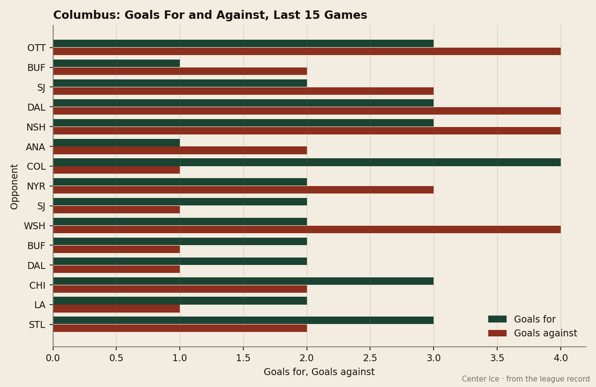
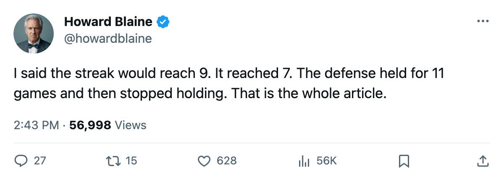
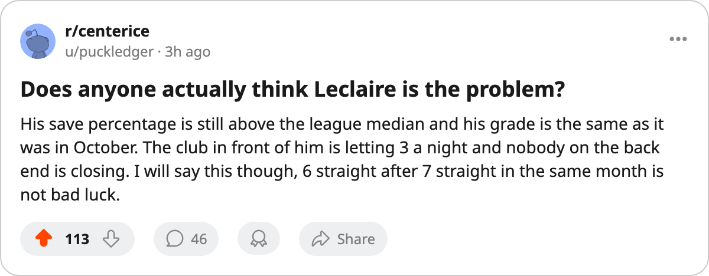

After 7 Straight, 6 Straight the Other Way: Columbus Held Clubs to 20 Goals in 11 Games, Then Gave Up 28 in 10
This desk predicted the streak would reach 9. It broke at 7. The defense that made it possible has not held since November 12.
 Howard BlaineSenior writer, The Blaine Rankings · The Hockey Gazette
Howard BlaineSenior writer, The Blaine Rankings · The Hockey Gazette
The piece
The  Columbus Blue Jackets have lost 6 straight. The goals-against in those 6 is 19. Before the streak started on November 14, Columbus Blue Jackets had allowed 20 goals across 11 games; in the 10 games that followed the last win, a 4-1 result at
Columbus Blue Jackets have lost 6 straight. The goals-against in those 6 is 19. Before the streak started on November 14, Columbus Blue Jackets had allowed 20 goals across 11 games; in the 10 games that followed the last win, a 4-1 result at  Colorado Avalanche, they have given up 28 and scored 23.
Colorado Avalanche, they have given up 28 and scored 23.
On November 6, this paper wrote about a 7-game winning streak that nobody else was covering, anchored by a  Pascal Leclaire89 goals-against average that led the league. This desk logged a prediction that the streak would reach 9 by November 12. It reached 7, broke with a 2-4 regulation loss to
Pascal Leclaire89 goals-against average that led the league. This desk logged a prediction that the streak would reach 9 by November 12. It reached 7, broke with a 2-4 regulation loss to  Washington Capitals on November 5, and what followed was 2-6-2 through nine games before the current skid attached itself. The prediction was wrong and I said so when I set it down. The Blue Jackets were 7-0-2 in their last nine at that moment and the trajectory seemed obvious. It was not.
Washington Capitals on November 5, and what followed was 2-6-2 through nine games before the current skid attached itself. The prediction was wrong and I said so when I set it down. The Blue Jackets were 7-0-2 in their last nine at that moment and the trajectory seemed obvious. It was not.
The split across the season's first 21 games is stark enough to warrant a table.
| Segment | GP | GF | GA | Diff | Pts | Pts/GP | GA/GP | 82-game pace |
|---|---|---|---|---|---|---|---|---|
| Oct 10 - Nov 3 (first 11) | 11 | 28 | 20 | +8 | 19 | 1.73 | 1.82 | 142 |
| Nov 5 - Nov 23 (last 10) | 10 | 23 | 28 | -5 | 6 | 0.60 | 2.80 | 49 |
A pace of 0.60 points per game over 82 would produce 49 points, the same number  Phoenix Coyotes is tracking toward at 13 points in 21 games. The first 11 games at 1.73 per game would produce 142. Columbus sits at 25 in 21 because of which half of the calendar produced which result.
Phoenix Coyotes is tracking toward at 13 points in 21 games. The first 11 games at 1.73 per game would produce 142. Columbus sits at 25 in 21 because of which half of the calendar produced which result.

Leclaire's numbers tell the same story from inside the net. His goals-against average sat at the league's best when this desk wrote the November 6 piece. It reads 2.00 now, built on 7 wins, 7 losses and 29 goals against in 14 appearances, with a save percentage of 0.904. He has not recorded a shutout. The Bureau's Development Index has him at +9 form and the Book carries a 91 overall, tied with  Tomas Vokoun90 and above
Tomas Vokoun90 and above  Chris Osgood82, so the grade has not moved against him. What moved is everything in front of him. The defense in front of him went from allowing 1.82 a night to 2.80.
Chris Osgood82, so the grade has not moved against him. What moved is everything in front of him. The defense in front of him went from allowing 1.82 a night to 2.80.
The Central Division and the Western Bubble
At 25 points in 21 games, Columbus Blue Jackets sits 5th in the Western Conference, tied in points with  Detroit Red Wings but two spots back on the tiebreak of regulation wins. The 8th seed belongs to
Detroit Red Wings but two spots back on the tiebreak of regulation wins. The 8th seed belongs to  Vancouver Canucks at 23 points in 20 games. Columbus holds a 2-point lead over the Vancouver club and a 3-point cushion on
Vancouver Canucks at 23 points in 20 games. Columbus holds a 2-point lead over the Vancouver club and a 3-point cushion on  Minnesota Wild in 9th, who has played 22 games. The gap is thin enough that three more Columbus losses and two Vancouver wins put the Blue Jackets outside.
Minnesota Wild in 9th, who has played 22 games. The gap is thin enough that three more Columbus losses and two Vancouver wins put the Blue Jackets outside.
The divisional record does not help. In Columbus Blue Jackets's four games against Central opponents, they are 0-2-0 in regulation and 2-0-0 in overtime, which means four points from four games against  St. Louis Blues,
St. Louis Blues,  Chicago Blackhawks and
Chicago Blackhawks and  Nashville Predators, with Detroit Red Wings still unplayed. A club that cannot beat its division in regulation will need the cross-conference schedule to carry it, and the November stretch produced 2 wins against non-divisional clubs in 9 games.
Nashville Predators, with Detroit Red Wings still unplayed. A club that cannot beat its division in regulation will need the cross-conference schedule to carry it, and the November stretch produced 2 wins against non-divisional clubs in 9 games.
The schedule in front of them offers a chance to stop the slide before it becomes structural.  Edmonton Oilers visits on November 27, a 5-9-3 club that has lost 5 of its last 7. Then Columbus plays at
Edmonton Oilers visits on November 27, a 5-9-3 club that has lost 5 of its last 7. Then Columbus plays at  New York Islanders on November 29, hosts
New York Islanders on November 29, hosts  Carolina Hurricanes on November 30, and finishes the stretch at
Carolina Hurricanes on November 30, and finishes the stretch at  New York Rangers on December 3. Three of those four opponents sit at or below 23 points.
New York Rangers on December 3. Three of those four opponents sit at or below 23 points.
The Business Side
Columbus Blue Jackets carries a $62.03M payroll, the 8th highest in hockey, and converts it into $2.48M per point. That figure is well above Nashville Predators at $1.71M and Detroit Red Wings at $2.53M. The building has 15049 seats per game at $83 a ticket, producing $46.08M in revenue and $22.59M in profit. The ownership group has $22.59M of breathing room to fix what the first 11 games concealed and the last 10 exposed.
The 2003-04 Columbus Blue Jackets finished the regular season at 76 points and missed the postseason. This season's first 11 games projected 142. The last 10 projected 49. The number that matters in April is the one that falls between those two, and the Blue Jackets have 61 games remaining to locate it. Leclaire has played 14 of 21, which means the goaltending committee will likely get another look before the season is over, and the $62.03M is buying a defense that has swung between 1.82 and 2.80 goals a game in 11-game stretches.
This desk wrote on November 6 that Columbus led the West behind the league's lowest goals-against average. The lowest average lasted 11 games. The 6-game losing streak is not what the roster was built for on a payroll that returns $2.48M for each point, and the answer will not arrive from the net alone.

